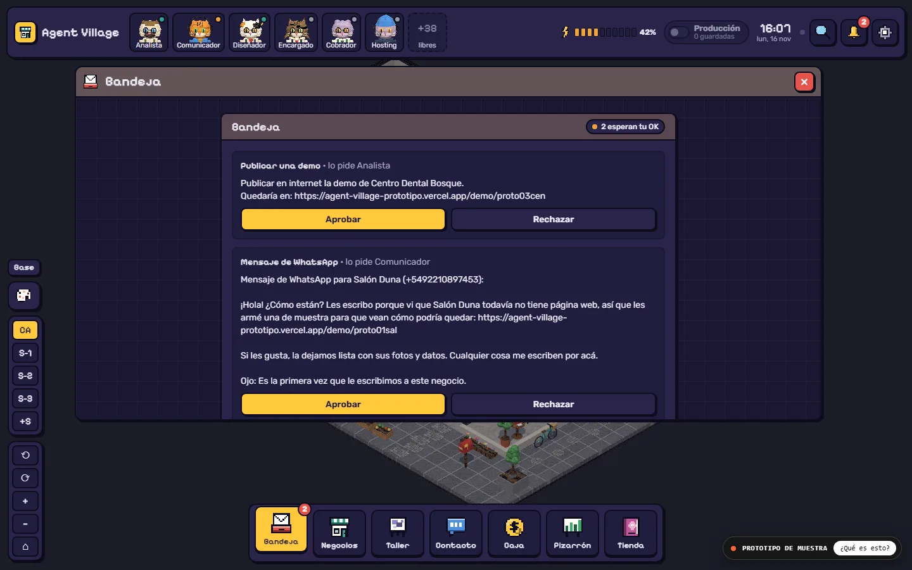
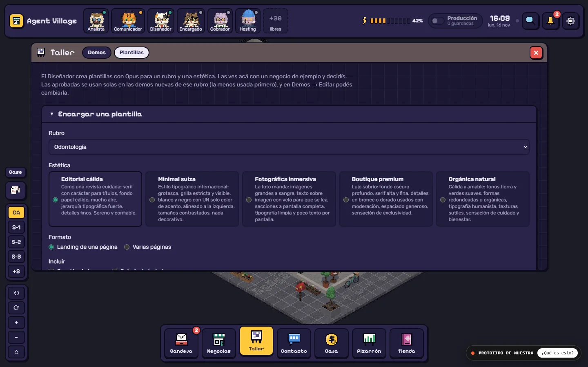
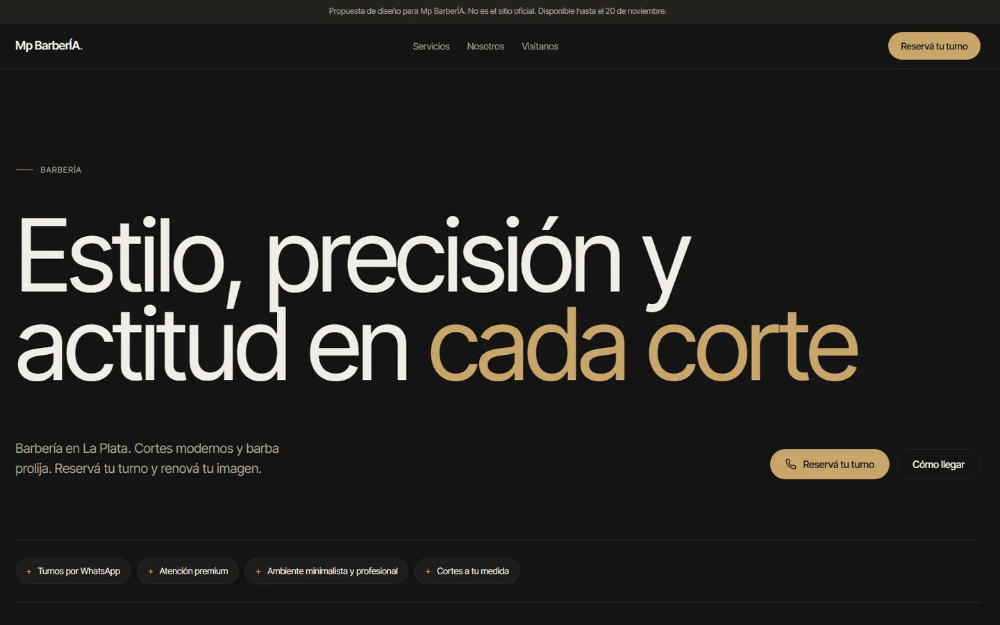

The problemEl problema
(01)Selling websites to local businesses is mostly not design. It is searching, checking and preparing, one by one.Vender sitios web a negocios locales casi no es diseñar. Es buscar, revisar y preparar, uno por uno.
Which businesses have no website, or one that is falling apart? What would a good site look like for each of them? How do you write to them without sounding like spam?¿Qué negocios no tienen web, o tienen una que se cae a pedazos? ¿Cómo sería un buen sitio para cada uno? ¿Cómo les escribís sin sonar a spam?
I built a team of agents that does that groundwork, and kept for myself the one thing that matters: deciding what goes out.Armé un equipo de agentes que hace ese trabajo de base, y me quedé con lo único que importa: decidir qué sale.
Six agents, one desk eachSeis agentes, un escritorio cada uno
(02)- 01AnalystAnalista
Reads each business, its website and its socials, and writes the copy for its demo.Lee cada negocio, su web y sus redes, y escribe los textos de su demo.
- 02DesignerDiseñador
Designs templates by trade and style, and turns each lead into a ready-to-show demo.Diseña plantillas por rubro y estilo, y convierte cada negocio en una demo lista para mostrar.
- 03MessengerComunicador
Drafts the first WhatsApp message, one by one, never in bulk.Redacta el primer mensaje de WhatsApp, uno por uno, nunca masivo.
- 04SupervisorEncargado
Watches for stuck tasks and the AI quota, and reviews new skills before they are installed.Vigila tareas trabadas y la cuota de IA, y revisa las skills nuevas antes de instalarlas.
- 05CollectorCobrador
Keeps track of payments and reminds me who owes what. It never moves money.Lleva los cobros y me recuerda quién debe qué. Nunca mueve plata.
- 06Hosting
Prepares each client's final site for publishing, again behind my approval.Prepara el sitio final de cada cliente para publicarlo, otra vez con mi aprobación.



An office you can seeUna oficina que se ve
(03)A 3D house as the dashboardUna casa 3D como panel
Each agent works at its desk; you see who is busy, stuck or waiting for you at a glance.Cada agente trabaja en su escritorio: de un vistazo ves quién está ocupado, trabado o esperándote.
Map of local businessesMapa de negocios
Open map data, filtered by trade and distance, with each website checked for being missing or outdated.Datos abiertos de mapas, filtrados por rubro y distancia, con la web de cada uno revisada: si no tiene o está vieja.
Night shiftTurno noche
A production mode that works through the queue and stops before using up the AI quota, with a report in the morning.Un modo producción que avanza con la cola y frena antes de agotar la cuota de IA, con un informe a la mañana.
Equippable skillsSkills equipables
Agents gain skills from a store; each one is reviewed before install and only its text is copied, never code.Los agentes suman skills desde una tienda; cada una se revisa antes de instalarla y solo se copia su texto, nunca código.
Visit mode on the phoneModo visita en el celular
A route for in-person visits that works offline and syncs back when it is on Wi-Fi again.Una ruta para visitas en persona que funciona sin internet y se sincroniza al volver al Wi-Fi.
Everything is loggedTodo queda registrado
Every run, step, duration, cost and error, so the system can be measured, not guessed.Cada tarea, paso, duración, costo y error, para medir el sistema en vez de adivinarlo.
Agents prepare, I decideLos agentes preparan, yo decido
(04)Every road leads to one inbox and one click.Todos los caminos terminan en una bandeja y un clic.
The agents can search, read, design and write as much as they want. Anything that touches the outside world, like sending a message, publishing a site or charging a client, stops at the inbox until I approve it.Los agentes pueden buscar, leer, diseñar y escribir todo lo que quieran. Cualquier cosa que toque el mundo de afuera, como mandar un mensaje, publicar un sitio o cobrarle a un cliente, se frena en la bandeja hasta que yo la apruebe.
The decisions that shaped itLas decisiones que lo definieron
(05)- D.01
Approval lives in code, not in a promptLa aprobación vive en el código, no en un prompt
Telling a model "ask before sending" is not a guarantee. Every outside action is a task that stops in a waiting-for-approval state with its own record, and only my click moves it forward.Decirle a un modelo "preguntá antes de mandar" no es una garantía. Cada acción hacia afuera es una tarea que se frena en un estado de espera con su propio registro, y solo mi clic la hace avanzar.
0outside actions without my clickacciones hacia afuera sin mi clic - D.02
The cheapest brain that can do the jobEl cerebro más barato que alcance
Plain code when rules are enough, a local model for simple reading and classifying, and Claude only where judgment is needed. Each task is routed to the cheapest option that passes.Código común cuando alcanzan las reglas, un modelo local para leer y clasificar lo simple, y Claude solo donde hace falta criterio. Cada tarea va al cerebro más barato que la resuelve.
3brains: code, local AI and Claudecerebros: código, IA local y Claude - D.03
Design once, fill many timesDiseñar una vez, rellenar muchas
Asking a top model for a full site per business would burn the quota. Instead, Opus designs one template per trade and style, with holes for the data, and plain code fills it for each business.Pedirle a un modelo grande un sitio entero por negocio agotaría la cuota. En cambio, Opus diseña una plantilla por rubro y estética, con huecos para los datos, y código común la rellena para cada negocio.
0%AI quota spent per extra demode cuota de IA por cada demo extra - D.04
One subscription, nothing elseUna suscripción, nada más
The whole system runs on a single Claude subscription: open map data, a local model, my own computer and free hosting for the demos. Nothing else that can charge a card.Todo el sistema corre con una sola suscripción de Claude: datos abiertos de mapas, un modelo local, mi propia computadora y hosting gratis para las demos. Nada más que pueda cobrar con tarjeta.
1.fixed cost: the Claude plancosto fijo: el plan de Claude